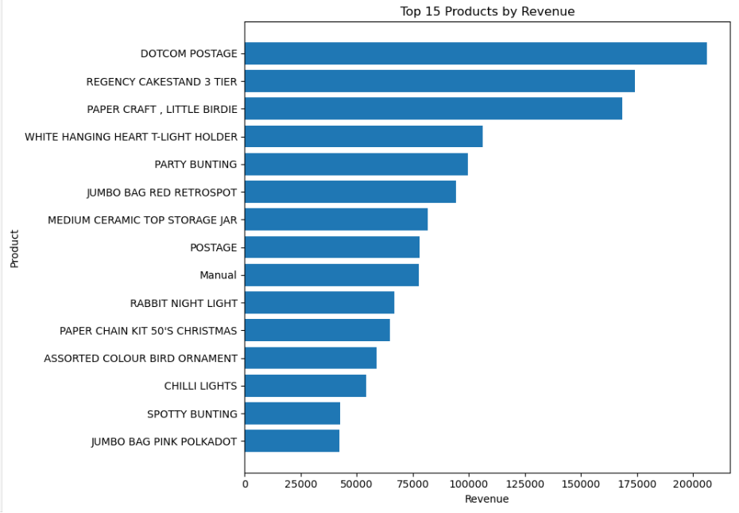
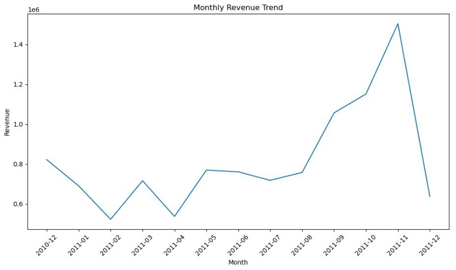
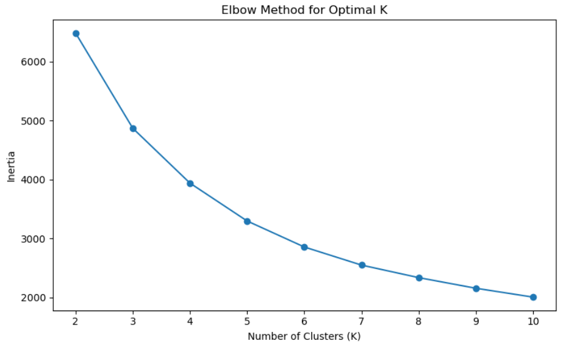
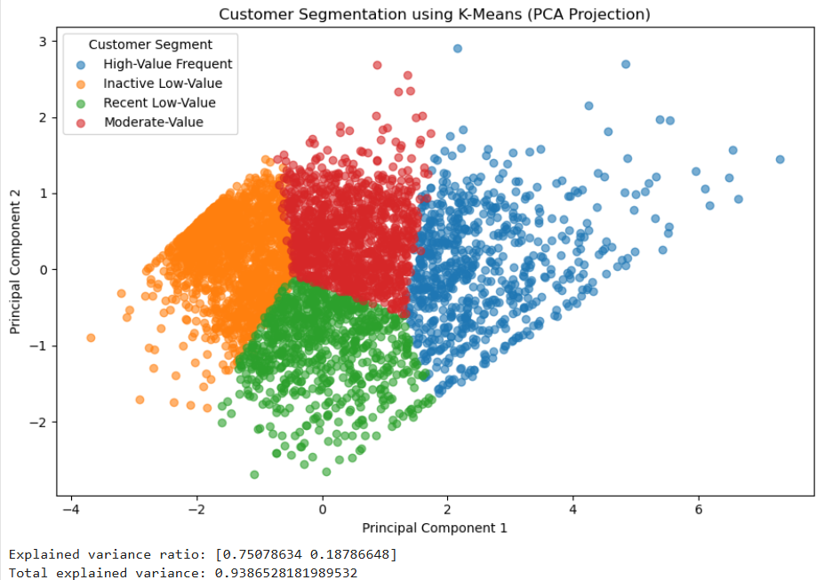

Product Sales by Quantity
This analysis compares products based on the quantities sold. It helps identify products that contribute substantially to transaction volume and reveals differences in purchasing demand across the product catalogue.
Quantity sold provides a volume-based view of product popularity. It should be interpreted separately from revenue, since products with high sales volumes do not necessarily generate the highest income.

Product Sales by Revenue
This figure compares products by their revenue contribution. Unlike quantity-based analysis, it highlights the products that generate the greatest monetary value for the retailer.
Considering quantity and revenue together provides a more complete understanding of product performance and helps distinguish high-volume products from high-revenue products.

Relationship Between Product Purchases
The correlation analysis examines the relationship between purchases of different products. In particular, the Pearson correlation between JUMBO BAG RED RETROSPOT and JUMBO BAG STRAWBERRY is approximately 0.684.
This positive correlation indicates that the observed purchasing patterns for these products tend to move together. Correlation alone does not establish that purchasing one product causes customers to purchase the other.

Geographic Distribution of Sales
The country-level analysis compares retail activity across different markets. The United Kingdom dominates the dataset's sales activity, reflecting the retailer's strong domestic market.
Comparing units sold across countries helps reveal the geographic concentration of demand and provides context for examining international purchasing behaviour.

Product Preferences Across Countries
This analysis compares leading products across selected international markets. Rabbit Night Light emerges as a leading product in several of the international markets examined.
The United Kingdom is excluded from this international comparison so that the patterns in other countries can be examined without the dominant domestic market overwhelming the comparison.

Monthly Revenue Trends
The monthly revenue analysis examines how sales value changes over the observation period and helps identify periods of stronger or weaker retail activity.
November records the highest observed monthly revenue in the analysed period. December contains only partial-month data, so its value should not be directly compared with complete months without accounting for the shorter observation period.

Choosing the Number of Customer Segments
The elbow method is used to examine how the within-cluster variation changes as the number of K-Means clusters increases. This helps assess a suitable balance between cluster compactness and model complexity.
The project uses four customer clusters for the final segmentation analysis.

Customer Segmentation Using K-Means
K-Means clustering identifies four customer segments using customer-level purchasing behaviour and monetary value. Principal Component Analysis (PCA) provides a lower-dimensional projection for visualising the resulting groups.
The first two principal components explain approximately 93.86% of the variance in the PCA representation, providing a useful two-dimensional view of the customer data.
Customer Segments and Key Observations
The analysis identifies four customer groups with distinct recency, frequency, and monetary characteristics.
- High-Value Frequent: 713 customers; average recency of 12.17 days, frequency of 13.75 invoices, and monetary value of 8,088.02.
- Inactive Low-Value: 1,622 customers; average recency of 181.51 days, frequency of 1.32 invoices, and monetary value of 341.00.
- Recent Low-Value: 837 customers; average recency of 17.70 days, frequency of 2.19 invoices, and monetary value of 557.32.
- Moderate-Value: 1,166 customers; average recency of 71.64 days, frequency of 4.08 invoices, and monetary value of 1,801.78.
Overall Findings
- Customer value: The customer base contains groups with substantially different spending and purchasing-frequency characteristics.
- Customer engagement: High-value frequent customers show recent activity and repeated purchases, while inactive low-value customers have much higher recency and lower purchasing frequency.
- Product relationships: Positive correlations can help identify products with similar purchasing patterns, but they do not prove causation.
- Geographic patterns: Sales are dominated by the United Kingdom, while international comparisons reveal additional product preferences.
- Time-based patterns: November has the highest observed monthly revenue, with the partial December period requiring cautious interpretation.
Together, these results demonstrate how exploratory data analysis and customer segmentation can help retailers understand purchasing behaviour and identify opportunities for more targeted customer engagement.